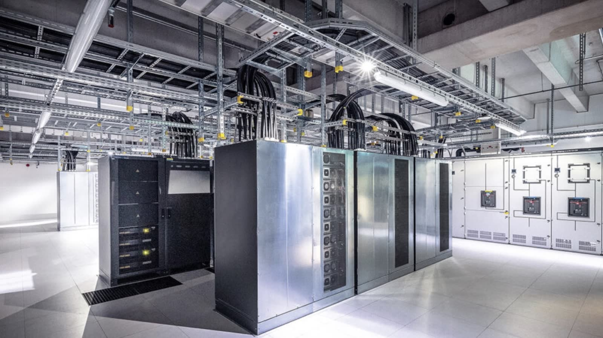

SectorData centres and critical powerHV operational control, commissioning, progressive energisation, resilient power interfaces and handover
SectorElectricity networksSwitching, asset replacement, fault restoration and commissioning across UK DNO environments
ExperienceMajor infrastructureBuilding services, HV and LV systems, construction interfaces, energisation and handover
